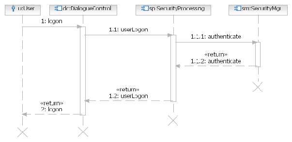

| Artifact: Component Model |
 |
|
The purpose of the component model is to help organize projects, manage the complexity of the solution, and ensure that all architecturally requirements have been addressed. It helps developers design and implement the solution and understand the big picture of the system design. |
| Main Description |
The component model describes the structure of a system in terms of its software components with their
responsibilities, interfaces, relationships, and the way they collaborate to deliver the required functionality. The
component model is the main artifact documenting the functional view of the architecture and serves as an abstraction
of the design. Components identified may be decomposed into further component models before they complete the
specification required for detailed design.
Component models help define and document:
Component models are documented at 2 levels:
You may transform logical components into physical components via custom development, the purchase of products, or the
reuse of assets.
It may be important to maintain a separation between logical and physical components on larger projects. However,
smaller or less complex projects may evolve a single logical component model into a physical model, and end up with
only a physical model.
Examples of components at the logical level are a 'Message Bus' or a 'Customer Relationship Manager' component.
Components at the physical level that implement these logical components might be 'IBM WebSphere Message Broker' or
'Siebel Contact Center.' |
|---|---|
| Brief Outline |
The Component Model consists of:
|
| Notation | The different kinds of diagrams and their associated notation used in documenting the Component Model are summarized below. Component Relationship Diagram
A Component Relationship Diagram shows the static dependency relationships between components or subsystems. Figure 1 - Component Relationship Diagram Component Interaction Diagram A Component Interaction Diagram shows the interactions between individual component instances and how a number of such component instances collaborate together to realize a scenario. Interaction diagrams also show the sequential flow of messages over time.  Figure 2 - Component Interaction Diagram |
| Selected Representation | A UML modeling tool is the preferred method for developing the component model. UML 2.0 is the standard notation. |

| Templates | |
|---|---|
| Examples |
Points to consider when deciding whether to use a Component Model:
Component models tend to be useful in companies where systems live for decades, or where there are many variants of the
system.
To ensure the successful development of a component model on a project, your team should:
|
| Impact of not having |
It is difficult to gain an understanding of the structure of a complex system without some kind of component
model.
The absence of this artifact may result in:
|
|---|---|
| Reasons for not needing |
A Component Model may not be necessary when:
|
| Representation Options |
Ideally, you should represent component models using a UML modeling tool that supports the UML 2 notation defined for
this artifact. Modeling tools help ensure consistency between models and between the various diagrams they contain by
allowing model elements to be shared among many models or diagrams. These tools also allow multiple views of the same
model.
Alternatively, you can represent component models through a series of stand-alone diagrams developed in diagramming
tools, then bound together within a word-processing document. A diagramming tool is difficult to maintain if any model
element appears in multiple diagrams, as changes to the model element must be made in each diagram on which it appears.
These tools may be appropriate for smaller projects in which the development and maintenance of the component model is
limited in scope, resources and effort. However, this approach is impractical for a team of practitioners responsible
for maintaining an up-to-date component model that interoperates with other models, such as the requirements and
operational models.
Whichever option you choose, do not underestimate the importance of using a common notation and standard like UML 2.
All diagrams, irrespective of representation option, should use formal notation, and UML 2 is recommended. |
| Checklists | |
|---|---|
| Concepts | |
| Guidelines | |
| Estimation Considerations |
Licensed Materials - Property of IBM |